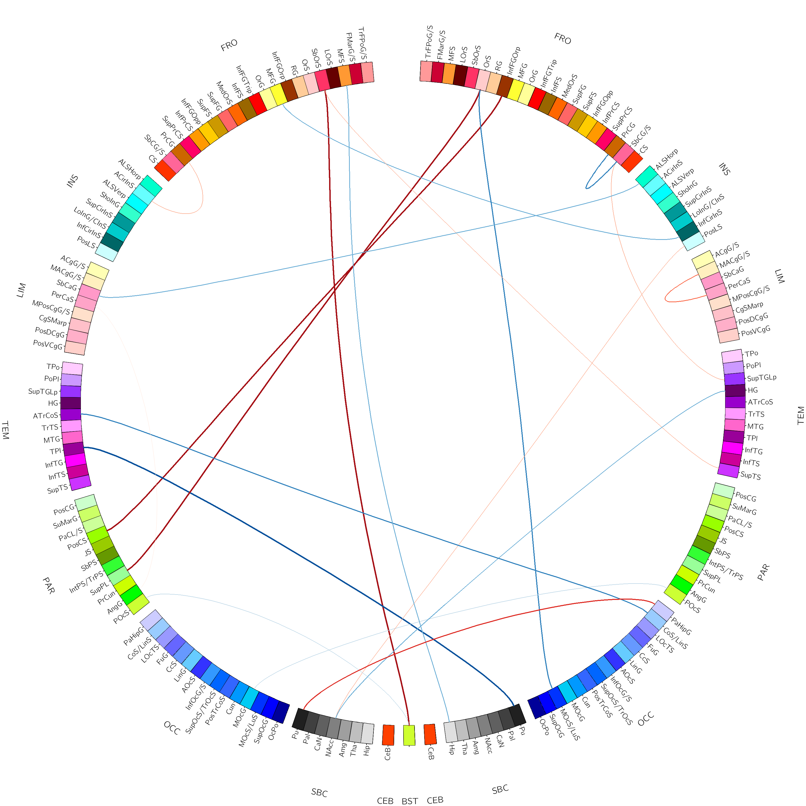

Circos: Fonksiyonel bağlantısallık
Eylül 2018
Circos, aslında genom araştırmacılarının görselleştirme ihtiyaçları üzerine doğmuş bir araç. Fonksiyonel MRG'de biz farklı beyin bölgeleri arasındaki bağlantısallıkları hesaplıyoruz ve bulgularımızı görselleştirecek farklı yazılımlar kullanıyoruz. Fakat bağlantısallığını hesapladığınız bölge adedi arttıkça hem görselleştirmesi hem de listelemesi zorlaşıyor. Bu noktada bence Circos güzel bir çözüm.

Circos kurulumu:
Kurulum için Circos sitesini takip ettim.
Öncelikle Strawberry Perl kurulumunu yaptım. Perl kurulduktan sonra circos-0.69-5.tgz'yi indirip açtım. Bendeki konumu D:\StrawberryCircos\.
Circos'un eksik modülleri için
perl D:\StrawberryCircos\circos-0.69-5\bin\circos -modulesD:\Strawberry\perl\bin\cpancpan> install Config::General
...
cpan> install Text::FormatExample klasöründe PowerShell çalıştırıp
D:\StrawberryCircos\circos-0.69-5\example> perl D:\StrawberryCircos\circos-0.69-5\bin\circos -conf etc\circos.confCircos'ta Connectogram Hazırlamak:
Circos'ta genetik terimler kullanıldığı için beyin bağlantısallığındaki karşılıkları: kromozom'un beyin lobları, band'ın beyin bölgeleri olacaktır. Hazırladığımız data dosyasına karyotype denilecektir.
Kromozom Formatı chr – ID Label(grafikte görünmesini isteğiniz isim) başlangıç bitiş(kromozomun boyutunu belirlemek için) renk
Örnek chr - fro_l FRONTAL 0 212302 white frontal lobda 212302 vokselimin olduğunu ve grafikte bu bölgenin FRONTAL olarak görünmesini istediğimi belirtmiş oluyorum. Renklerle alakalı yardım için de etc/color.conf belgesine bakabilirsiniz.
- A full
A full